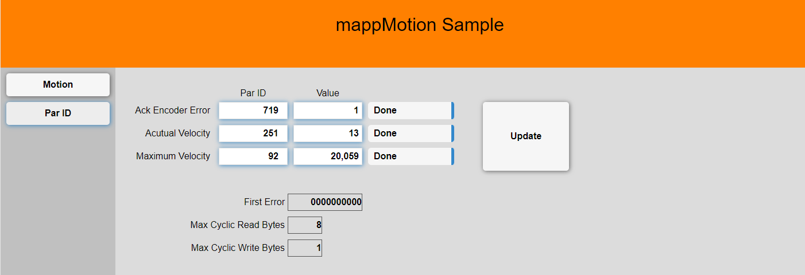

Par ID
The par ID sample provides a simplified interface to control the ACOPOS parameter IDs. Parameter IDs can be read or written once or cyclic. In addition there is a cyclic multiplexed mode where data is accessed continuously but not every cycle. The data type is derived from variable data type. Make sure that the variable data type matches the parameter ID data type. If the variable is none standard type (ex. array or structure) then the data type mcACPAX_PARTYPE_VOID is used.

Also see Automation Studio help
- (64f032b8-d12d-4fdf-a118-179256305dcf) for a complete list of parameter IDs.
- (89221e8a-e9dd-427b-a12b-2b75d6f5fe83) for a description of MC_BR_ProcessParID_AcpAx
- (b504b417-f0ed-4e98-914a-73b105a3931b) for a description of MC_BR_GetCyclicDataInfo_AcpAx
Repo Link
Here is the link to the repository.
Configuration
The sample can be configured through the following constants located in the VAR-file of the package.
| Parameter | Function | Default |
|---|---|---|
| AxisParNum | Total number of parameter IDs | 10 |
Interface structure
The sample uses a variable structure to communicate with the outside world that can also be used to interact with other tasks. The structure looks as follows:
| Parameter | Function |
|---|---|
| CmdUpdate | Update par id configuration. |
| MpLink | The axis reference establishes the connection between the function block and an axis. |
| ParIds | Array of parameters ID configurations. See details below. |
| MaxReadDataBytes | Maximum number of cyclic bytes used in read direction |
| MaxWriteDataBytes | Maximum number of cyclic bytes used in read direction |
| ErrId | Shows the first error that occurred in a parameter configuration. Data access will continue for all parameter IDs that are configured correct. The error ID must be reset with CmdResetError. |
Program structure
Parameter access is configured in the sub structure ParIds
| ParIds Structure | Function |
|---|---|
| Execute | This variable defines how the parameter ID is accessed. DONE indicates that one time access was finished. ONCE triggers as one time access. CYCLIC access transfers the data every task cycle. Keep in mind that the amount of data that can be transferred every cycle is limited. MULTI access transfers the data continuously as fast as possible but does not guaranty data access in every cycle. - mcACPAX_PARID_DONE - mcACPAX_PARID_GET_ONCE - mcACPAX_PARID_SET_ONCE - mcACPAX_PARID_GET_CYCLIC - mcACPAX_PARID_SET_CYCLIC - mcACPAX_PARID_GET_MULTI - mcACPAX_PARID_SET_MULTI |
| Variable | Variable name as string. Use 'VariableName' for global variables and 'TaskName:VariableName' for local variables. Make sure that the variable data type matches the parameter ID data type. |
| ParID | Parameter ID number |
Sample code
Here is a sample snippet that can be used as a starting point.
Program init
// --------------------------------------------------------------------------
// Preset ParID module
AxisParId.MpLink := ADR(gAxis_1); // MpLink for axis
AxisParId.CmdUpdate := TRUE;
// Acknowledge encoder battery error
mcACPAX_UDINT := 1; // Par ID value: reset encoder error
AxisParId.ParIds[1].Execute := mcACPAX_PARID_SET_ONCE; // Execute write command once
AxisParId.ParIds[1].ParID := 719; // Par ID: encoder command
AxisParId.ParIds[1].Variable := 'Axis_1:mcACPAX_UDINT'; // Variable as string
// Read actual speed cyclic
mcSPEED_ACTUAL := 0; // Par ID value: actual speed
AxisParId.ParIds[2].Execute := mcACPAX_PARID_GET_CYCLIC; // Execute write command cyclic
AxisParId.ParIds[2].ParID := 92; // Par ID: actual speed
AxisParId.ParIds[2].Variable := 'Axis_1:mcSPEED_ACTUAL'; // Variable as string
// Write maximum speed
mcSPEED_MAX := 0; // Par ID value: actul position
AxisParId.ParIds[3].Execute := mcACPAX_PARID_DONE; // Dont execute command automatically
AxisParId.ParIds[3].ParID := 111; // Par ID: actul position
AxisParId.ParIds[3].Variable := 'Axis_1:mcSPEED_MAX'; // Variable as string
END_PROGRAM
Program cyclic
PROGRAM _CYCLIC
// --------------------------------------------------------------------------
// Call axis actions used for this drive
ParIDAction;
END_PROGRAM
Revision
Version 8
- Fixed cyclic communication information
- Increased drop down box width
- Changed demo par ids
Version 7
- Update mappMotion to 5.24
- Removed obsolete hardware
- Added new outputs MaxReadDataBytes and MaxWriteDataBytes that show how many bytes are used by cyclic communication
Version 6
- Only get variable data on update
- Removed CmdResetError
- Added CmdUpdate
- Update to mappMotion 5.23
Version 5
- Update to mappMotion 5.22.1
- Improved error handling
Version 4
- Removed dependency from common
- Added cyclic par id exchange
- Simplified interface
Version 3
- Renamed function block
Version 2
- Renamed action
Version 1
- First release